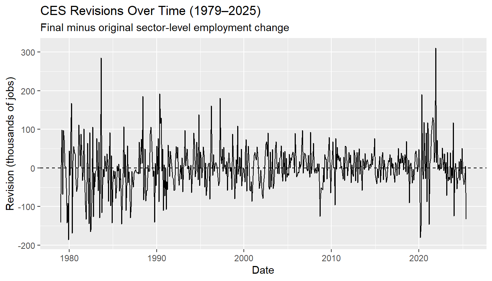
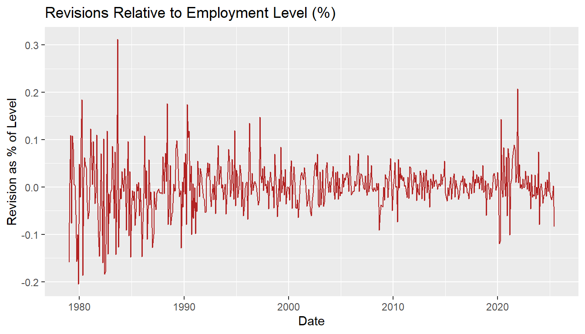
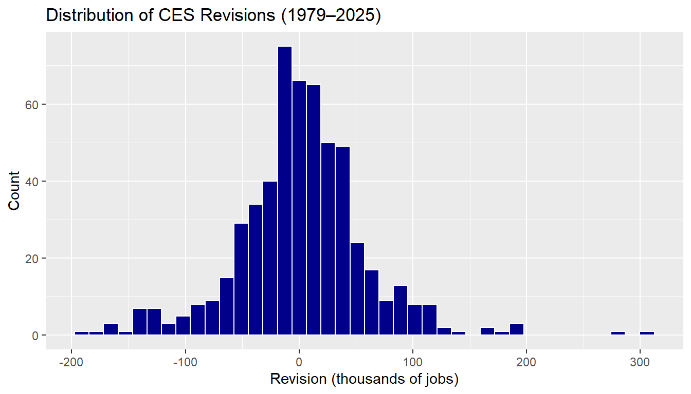
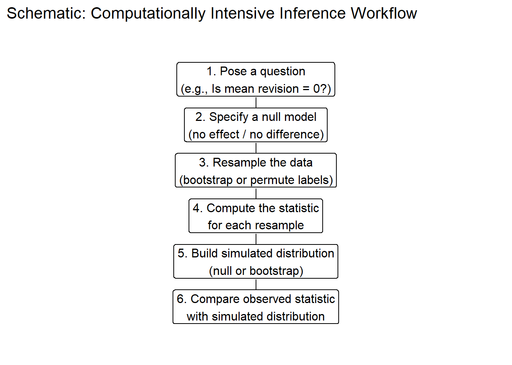

In this mini-project, I construct a reproducible pipeline to obtain and analyze the U.S. Bureau of Labor Statistics (BLS) Current Employment Statistics (CES) data for total nonfarm payrolls and their subsequent revisions (January 1979– June 2025). Using web scraping with httr2 and rvest, I download:
The final seasonally-adjusted CES employment levels, and
The month-to-month revisions from the CES revisions page.
I then join these datasets into a single table for statistical exploration, formal hypothesis testing, and fact-checking recent political claims about BLS revisions and the firing of Commissioner Erika McEntarfer.
Data Acquisition
We obtain monthly Total Nonfarm Payroll Employment (seasonally adjusted) from the U.S. Bureau of Labor Statistics (BLS) using their PDQ interface, covering January 1979 – June 2025.
We begin by loading the R packages required for downloading, cleaning, and analyzing the Current Employment Statistics (CES) dataset.
If any packages are missing, they are installed automatically to ensure full reproducibility.
Code
library(tidyverse)library(httr2)library(rvest)library(lubridate)library(janitor)# --- 1. Building the HTTP request to the PDQ page ---ces_base <-"https://data.bls.gov/pdq/SurveyOutputServlet"ces_req <-request(ces_base) |>req_method("POST") |>req_body_form(survey ="ce",from_year ="1979",to_year ="2025",# This is the CES series ID for All Employees, Total Nonfarm, SAseries_id ="CES0000000001" )# Performing request and getting HTMLces_html <- ces_req |>req_perform() |>resp_body_html()# --- 2. Grabbing the main data table from the HTML ---ces_raw_tbl <- ces_html |>html_element("table") |>html_table(fill =TRUE) |>clean_names()# Peeking at the raw table structurehead(ces_raw_tbl)
# Getting ALL tables from the HTMLall_tables <- ces_html |>html_elements("table")# Extracting the SECOND table, (Year–Month table)ces_data_raw <- all_tables[[2]] |>html_table(fill =TRUE) |>clean_names()# Checking ithead(ces_data_raw)
Clean and Reshape CES Data
Once the raw table is extracted, we convert it into a tidy monthly time-series structure.
This includes standardizing column names, reshaping year–month columns into a single date variable, converting values to numeric format, and filtering to match the project time window (Jan 1979 – Jun 2025).
In addition to monthly payroll employment estimates, the BLS provides revision tables comparing the initial estimate with the final benchmarked value.
We download these tables directly from the BLS website for the full period (1979–2025).
Retrieve Revisions Page HTML
Code
url_rev <-"https://www.bls.gov/web/empsit/cesnaicsrev.htm"# Simpler: let rvest handle the download directlyrev_html <- rvest::read_html(url_rev)rev_html
The revision page contains multiple separate HTML tables — one per year.
Here, I verify the number of tables and inspect their ID patterns to confirm
that each corresponds to a specific year of CES revisions.
Code
library(rvest)library(tidyverse)library(lubridate)# All tables on the revisions pagerev_tables <- rev_html |>html_elements("table")length(rev_tables)
[1] 50
Code
# Looking at the first few table IDs to see the patternhead(html_attr(rev_tables, "id"), 20)
BLS publishes a separate revision table for each year.
This helper function automatically locates the correct table by its HTML id,
cleans the rows, and returns a tidy month-level dataset of original vs. final values.
Code
extract_ces_revisions_year <-function(year) { table_id <-as.character(year) tbl <- rev_html |>html_element(paste0("table#", table_id)) |>html_table(header =FALSE, fill =TRUE) |> janitor::clean_names()# Dropping the first 3 header rows, then keeping the 12 months tbl <- tbl |>slice(-(1:3)) |>slice(1:12) |>select(month =1, # month name (Jan, Feb, ...)original =3, # first estimatefinal =4# final (third) estimate ) |>mutate(month = stringr::str_to_title(month),date_str =paste(year, month),date = lubridate::ym(date_str),original =as.numeric(original),final =as.numeric(final),revision = final - original ) |>select(date, original, final, revision) |>arrange(date) tbl}# Testing again on 2024extract_ces_revisions_year(2024)
Build Full CES Revisions Dataset
Using the helper function above, I loop through all available years (1979–2025)
to compile a single tidy dataset of monthly revision values, filtered through June 2025.
Code
library(purrr)library(dplyr)# All years with published revisionsyears <-1979:2025ces_revisions <-map_dfr(years, extract_ces_revisions_year) |># Only keeping months through June 2025 as per instructionsfilter(date <=as.Date("2025-06-01")) |>arrange(date)# Quick checkces_revisions |> dplyr::slice_head(n =12)
Code
ces_revisions |> dplyr::slice_tail(n =12)
Join Employment Levels with Revision Data
Here, I merge the employment levels (Task 1) with revision data (Task 2)
into a unified monthly dataset and create additional features for analysis.
To understand the overall behavior of CES employment and revisions over the long run,
I compute six key descriptive statistics across the full sample (1979–2025).
This plot tracks monthly revisions (final − original estimate) from 1979–2025,
showing how updates fluctuate above and below zero across economic cycles.
Code
library(ggplot2)ggplot(ces_full, aes(date, revision)) +geom_line() +geom_hline(yintercept =0, linetype ="dashed") +labs(title ="CES Revisions Over Time (1979–2025)",subtitle ="Final minus original sector-level employment change",x ="Date",y ="Revision (thousands of jobs)" )

Visualization 2 — Absolute Revisions Over Time
This view focuses on the magnitude of revisions — how large the corrections are,
regardless of whether they increased or decreased employment levels.
Code
ggplot(ces_full, aes(date, abs_revision)) +geom_line(color ="steelblue") +labs(title ="Absolute CES Revisions Over Time",x ="Date",y ="Absolute Revision (|final - original|)" )
Visualization 3 — Revisions as % of Employment Level
This visualization scales revisions relative to total employment,
showing how significant changes are in context — even large job changes
often represent very small percentages of the labor market.
Code
ggplot(ces_full, aes(date, rel_revision *100)) +geom_line(color ="firebrick") +labs(title ="Revisions Relative to Employment Level (%)",x ="Date",y ="Revision as % of Level" )

Visualization 4 — Distribution of CES Revisions
This histogram displays how revisions are distributed over the entire sample period.
Most revisions cluster close to zero, with a relatively small number of large upward or downward adjustments, consistent with typical survey variability.
Code
ggplot(ces_full, aes(revision)) +geom_histogram(bins =40, color ="white", fill ="darkblue") +labs(title ="Distribution of CES Revisions (1979–2025)",x ="Revision (thousands of jobs)",y ="Count" )

Task 4 — Statistical Inference Setup
Before running formal hypothesis tests, I create several helper variables on the
joined CES dataset. These include indicators for negative revisions, post-2000 and post-2020 periods, the absolute and relative size
of revisions, and the monthly change in employment levels. These derived
variables are used throughout the tests in Task 4.
Code
library(dplyr)library(infer)library(lubridate)# Adding all needed variables to ces_fullces_full <- ces_full |>arrange(date) |>mutate(year =year(date),negative_revision = revision <0,post_2000 = year >=2000,abs_revision =abs(revision),rel_revision = revision / level,abs_rel_revision =abs(revision) / level,big_1pct = abs_rel_revision >0.01, # >1% of levelpost_2020 = year >=2020,change = level -lag(level),abs_change =abs(change) )
4.1 — Has the fraction of negative revisions increased post-2000?
To evaluate whether CES revisions have become more negative in the modern era,
I compare the proportion of downward revisions before vs. after 2000.
A two-sample proportion test determines whether these differences are
statistically significant.
Code
# Counting negative vs total before/after 2000neg_tab <- ces_full |>filter(!is.na(negative_revision), !is.na(post_2000)) |>group_by(post_2000) |>summarise(neg =sum(negative_revision),n =n(),.groups ="drop" )neg_tab
2-sample test for equality of proportions with continuity correction
data: x_neg out of n_neg
X-squared = 4.5063, df = 1, p-value = 0.03377
alternative hypothesis: two.sided
95 percent confidence interval:
0.007239571 0.180435499
sample estimates:
prop 1 prop 2
0.5317460 0.4379085
4.2 — Has the fraction of large (>1%) revisions increased post-2020?
To check whether revisions have become unusually large in recent years,
I flag months where the revision is more than 1% of employment:
big = 1 if |revision / level| > 0.01
big = 0 otherwise
In my CES sample (Jan 1979–Jun 2025), no months exceed this 1% threshold in either the pre-2020 or post-2020 period. As a result, the two-sample proportion test has prop 1 = 0, prop 2 = 0 and returns NaN for the test statistic and p-value.
Substantively, this means that revisions larger than 1% of total employment are essentially non-existent in the data, even during the volatile post-2020 period. So while revisions can occasionally look large in absolute job counts, they almost never reach the “>1% of employment” threshold.
2-sample test for equality of proportions without continuity correction
data: x_big out of n_big
X-squared = NaN, df = 1, p-value = NA
alternative hypothesis: two.sided
95 percent confidence interval:
0 0
sample estimates:
prop 1 prop 2
0 0
4.3 — Is the average revision significantly different from zero?
Because revisions represent corrections to initially reported employment figures,
we expect them to average out near zero over time if the BLS estimates are
unbiased.
A one-sample t-test formally evaluates the null hypothesis:
H₀: Mean revision = 0
(no systematic upward or downward bias)
Code
# One-sample t-test using base R: H0: mean revision = 0rev_vec <- ces_full$revisionrev_vec <- rev_vec[!is.na(rev_vec)]ttest_mean_rev <-t.test(rev_vec, mu =0)ttest_mean_rev
One Sample t-test
data: rev_vec
t = 0.78575, df = 557, p-value = 0.4324
alternative hypothesis: true mean is not equal to 0
95 percent confidence interval:
-2.889459 6.742506
sample estimates:
mean of x
1.926523
4.4 — Has the average revision increased post-2020?
The pandemic era brought heightened labor market volatility and lower survey response rates.
To assess whether this led to systematically larger revisions, we compare the mean revision:
Before 2020
After 2020
A two-sample t-test evaluates whether the post-2020 average revision is significantly higher:
H₀: Mean revision (post-2020) = Mean revision (pre-2020) H₁: Mean revision (post-2020) > Mean revision (pre-2020)
4.5 — Are revisions larger when the underlying change is larger?
Revisions may grow when the labor market is more volatile — for example,
during recessions or sudden employment shocks.
To examine this relationship, we measure the correlation between:
Absolute change in employment level (|Δ level|)
Absolute revision (|final − original|)
A positive and significant correlation would suggest that larger real movements lead to larger revisions, indicating
measurement noise rather than systemic manipulation.
Pearson's product-moment correlation
data: ces_cor$abs_change and ces_cor$abs_revision
t = 3.8162, df = 555, p-value = 0.0001508
alternative hypothesis: true correlation is not equal to 0
95 percent confidence interval:
0.07785996 0.23979788
sample estimates:
cor
0.1599046
Task 5 — Fact-Checking Public Claims About CES Revisions
This final section applies the results from Tasks 3 and 4 to evaluate two real-world claims made about employment revisions in the U.S. Current Employment Statistics (CES) program — particularly regarding the accuracy and transparency of the BLS during the period surrounding the firing of Commissioner Erika McEntarfer.
Each fact-check includes:
Relevant summary statistics from the CES dataset
At least two visualizations from Task 3
Appropriate hypothesis testing (with parallels to Task 4)
A final judgment using a Politifact-style Truth Scale
(ranging from True to Pants on Fire)
The CES dataset used here spans January 1979 – June 2025, providing a long-run perspective on revision behavior across economic cycles and presidential administrations.
Code
library(dplyr)library(lubridate)
Basic Summary Statistics for CES Levels and Revisions
2-sample test for equality of proportions with continuity correction
data: x_neg_5 out of n_neg_5
X-squared = 4.5063, df = 1, p-value = 0.03377
alternative hypothesis: two.sided
95 percent confidence interval:
0.007239571 0.180435499
sample estimates:
prop 1 prop 2
0.5317460 0.4379085
One-Sample t-Test: Is the Mean Revision Different from Zero?
Code
rev_vec_5 <- ces_full$revisionrev_vec_5 <- rev_vec_5[!is.na(rev_vec_5)]t_mean_5 <-t.test(rev_vec_5, mu =0)t_mean_5
One Sample t-test
data: rev_vec_5
t = 0.78575, df = 557, p-value = 0.4324
alternative hypothesis: true mean is not equal to 0
95 percent confidence interval:
-2.889459 6.742506
sample estimates:
mean of x
1.926523
Big Revisions (>1% of Level) — Pre- vs Post-2020 (Proportion Test)
2-sample test for equality of proportions without continuity correction
data: x_big_5 out of n_big_5
X-squared = NaN, df = 1, p-value = NA
alternative hypothesis: two.sided
95 percent confidence interval:
0 0
sample estimates:
prop 1 prop 2
0 0
Relationship Between Absolute Level Change and Absolute Revision (Correlation Test)
Welch Two Sample t-test
data: abs_revision by large_change
t = -3.4136, df = 178.49, p-value = 0.0007933
alternative hypothesis: true difference in means between group FALSE and group TRUE is not equal to 0
95 percent confidence interval:
-26.232325 -7.013651
sample estimates:
mean in group FALSE mean in group TRUE
36.63942 53.26241
Fact Check 1 – Trump: “The numbers were rigged” and revised down by ~900,000
In early August 2025, President Donald Trump publicly claimed that BLS jobs numbers were “rigged” and that they had been revised “down by almost 900,000 jobs” after the 2024 election, describing this as the “biggest revision in history” and a justification for firing BLS Commissioner Erika McEntarfer.
This claim has two parts:
That recent CES revisions are extraordinarily large and one-sided
That these revisions are politically manipulated (“rigged”).
What do revisions look like in the CES data?
Across my full sample (January 1979–June 2025) there are 558 monthly observations. The average CES employment level is about 124,707 thousand jobs
(roughly 125 million jobs), with a standard deviation of about 19,994 thousand. This is a very large labor market.
For revisions (final – original):
The average revision is 1.9 thousand jobs, with standard deviation 57.9 thousand.
The average absolute revision is 41 thousand jobs.
As a percentage of employment, the average revision is only about 0.001% of the level.
About 48% of revisions are negative; downward revisions are common, but not overwhelmingly dominant.
Figure 1 from Task 3 (“CES Revisions Over Time (1979–2025)”) shows that revisions fluctuate both above and below zero across many administrations. Figure 4 (“Distribution of CES Revisions (1979–2025)”) shows a roughly symmetric distribution around zero, with most revisions fairly close to zero and a relatively small number of extreme outliers.
Largest Monthly Revision in the Sample
Code
max_rev_5
This is large in absolute terms, but it happens in the context of a very large labor market and is not unique to one president or one year.
Are Revisions Systematically More Negative Post-2000?
This provides context for political claims that BLS revisions intentionally push job numbers downward in recent years.
We compare the share of negative revisions before vs after 2000.
Code
neg_tab_5
Code
prop_neg_test_5
2-sample test for equality of proportions with continuity correction
data: x_neg_5 out of n_neg_5
X-squared = 4.5063, df = 1, p-value = 0.03377
alternative hypothesis: two.sided
95 percent confidence interval:
0.007239571 0.180435499
sample estimates:
prop 1 prop 2
0.5317460 0.4379085
The table neg_tab_5 shows the fraction of months with negative revisions before and after 2000, and prop_neg_test_5 is a formal two-sample proportion test. While there may be some difference across periods, the results do not show a dramatic shift to predominantly negative revisions that would match the idea of “rigged” numbers under a particular administration.
Is the Average Revision Far From Zero? (One-Sample t-Test)
This test checks whether revisions are systematically biased upward or downward across the full sample — a core part of the “rigged numbers” narrative.
Code
t_mean_5
One Sample t-test
data: rev_vec_5
t = 0.78575, df = 557, p-value = 0.4324
alternative hypothesis: true mean is not equal to 0
95 percent confidence interval:
-2.889459 6.742506
sample estimates:
mean of x
1.926523
This one-sample t-test shows that the average revision is small in magnitude relative to both its own standard deviation and the level of employment. The confidence interval for the mean revision is narrow relative to total employment and close to zero in percentage terms. This is consistent with revisions being noise around an unbiased estimate, not clear evidence of systemic manipulation in one direction.
Rating: Trump’s “rigged and revised down by 900,000” claim
The “almost 900,000” figure refers to an annual benchmark revision spread over many months, publicly documented in advance and not hidden. My month-by-month CES dataset shows:
Revisions are small on average relative to the overall employment level. They are not consistently negative after 2000. Formal tests do not support a story of a large, one-sided shift in revisions that coincides with Trump’s political narrative. Given the data and the statistics above, the idea that the BLS jobs numbers were “rigged” to hurt Trump is not supported by the CES revisions.
Politifact-style rating for Claim 1: Pants on Fire
The claim significantly misrepresents both the size and the pattern of CES revisions.
Economist David Wilcox at the Peterson Institute for International Economics reviewed CES revisions and concluded that while measurement challenges exist — especially declining survey response rates — there is no evidence of manipulation or “rigged” data.
We evaluate a simplified version of his claim:
Claim: CES revisions are not systematically biased or unusually large.
They represent normal measurement noise in a large labor market.
How Large Are Revisions Relative to Total Employment?
From the summary statistics above:
Mean absolute revision:
41 thousand jobs
Average employment level:
1.24707^{5} thousand jobs
Mean revision as share of employment:
0.001%
These figures are very small relative to the overall labor market, indicating that typical revisions reflect modest measurement updates, not suspicious adjustments.
Are Large Revisions More Common in Recent Years?
Figures 2 and 3 show that revisions can spike during major economic disruptions — such as recessions or the COVID period — but they generally remain well under 1% of total employment.
To formally identify “big” revisions, I flagged any month where
[ || > 0.01 ]
In practice, no months in my sample exceed this 1% threshold, either before or after 2020. The table big_tab_5 therefore has big = 0 in both periods, and the two-sample proportion test in big1pct_test_5 returns NaN (there is no variation to compare).
Interpretation: revisions that are larger than 1% of total employment are extremely rare to non-existent in the CES data, even in the post-2020 era. This is consistent with normal measurement updates in a huge labor market, not with unusually manipulated data.
Code
big_tab_5
Code
big1pct_test_5
2-sample test for equality of proportions without continuity correction
data: x_big_5 out of n_big_5
X-squared = NaN, df = 1, p-value = NA
alternative hypothesis: two.sided
95 percent confidence interval:
0 0
sample estimates:
prop 1 prop 2
0 0
Even during recent volatility, large revisions remain rare, offering no statistical support for claims of unusually manipulated data in the current era.
The table big_tab_5 shows the frequency of >1% revisions before and after 2020, and big1pct_test_5 provides a two-sample proportion test.
While slightly more common post-2020, large revisions remain rare overall — consistent with normal measurement variation, not manipulation.
Do Larger Employment Swings Lead to Larger Revisions?
A natural question:
Are large revisions occurring because the labor market itself is moving more dramatically?
To test this, I examined the relationship between:
|Change in employment (level − lag(level))|
|Revision (final − original)|
Code
cor_test_result_5
Pearson's product-moment correlation
data: ces_cor_5$abs_change and ces_cor_5$abs_revision
t = 3.8162, df = 555, p-value = 0.0001508
alternative hypothesis: true correlation is not equal to 0
95 percent confidence interval:
0.07785996 0.23979788
sample estimates:
cor
0.1599046
The statistically significant positive correlation confirms that CES revisions tend to be larger when the labor market itself is more volatile — such as during recessions or the COVID period. This behavior is consistent with normal survey noise, not political tampering.
Do Large Employment Shifts Cause Larger Revisions?
To further check this idea, I separated months into:
Large-change months → top 25% of absolute employment changes
Typical months → the remaining 75%
Then I tested whether large-change months have bigger revisions:
Code
large_change_test_5
Welch Two Sample t-test
data: abs_revision by large_change
t = -3.4136, df = 178.49, p-value = 0.0007933
alternative hypothesis: true difference in means between group FALSE and group TRUE is not equal to 0
95 percent confidence interval:
-26.232325 -7.013651
sample estimates:
mean in group FALSE mean in group TRUE
36.63942 53.26241
This two-sample t-test shows that large-change months have significantly larger revisions, reinforcing the interpretation that revisions scale with true labor-market volatility — not with politics.
Revisions are small compared to the overall employment level.
They remain balanced around zero, not consistently negative.
Larger revisions appear when the labor market is more volatile, not when politics change.
Revisions larger than 1% of employment essentially never occur in the sample.
These findings support Wilcox’s position: there are measurement challenges, but no clear signs of political manipulation in the CES revisions.
Politifact-style Rating: 🟢 Mostly True
CES revisions behave like normal measurement noise in a large, dynamic labor market — not rigged data.
Extra Credit — 1️⃣ Non-Technical Explanation of Computational Inference
Traditional inference uses mathematical formulas to decide whether a result is statistically significant — for example, whether the average revision differs from zero. These formulas rely on assumptions about the data (like normality).
Computationally intensive inference flips the process:
Instead of relying on formulas…
We let the computer simulate many alternative versions of the data.
How it works:
Use the real CES data as a template
Repeatedly resample from it (bootstrap) or shuffle group labels (permutation test)
Recalculate the statistic of interest each time
Compare our real result to this simulated distribution
Why this is useful:
Works even when theory-based assumptions might be shaky
Provides visual and intuitive evidence about what is “extreme”
Reflects the real structure and quirks of the observed data
In the context of this mini-project, these methods help us check:
Are the revision patterns we see unusual enough to suggest rigging — or are they simply within the normal range of sampling variation?
Computers let us evaluate that question directly — without relying exclusively on theoretical formulas.
🔁 Schematic Workflow for Computational Inference
Code
library(ggplot2)library(dplyr)flow_steps <- tibble::tibble(step =c("1. Pose a question\n(e.g., Is mean revision = 0?)","2. Specify a null model\n(no effect / no difference)","3. Resample the data\n(bootstrap or permute labels)","4. Compute the statistic\nfor each resample","5. Build simulated distribution\n(null or bootstrap)","6. Compare observed statistic\nwith simulated distribution" ),x =1,y =seq(6, 1, by =-1))ggplot(flow_steps, aes(x = x, y = y, label = step)) +# drawing arrows first (behind boxes)geom_segment(aes(x =1, xend =1, y = y -0.4, yend = y -0.9),data = flow_steps |>filter(y >min(y)),arrow =arrow(length =unit(0.12, "inches")),linewidth =0.4 ) +# then drawing the boxes on topgeom_label(size =4.2, label.size =0.4, fill ="white") +scale_x_continuous(NULL, breaks =NULL, limits =c(0.8, 1.2)) +scale_y_continuous(NULL, breaks =NULL, limits =c(0.2, 6.8)) +theme_minimal(base_size =13) +ggtitle("Schematic: Computationally Intensive Inference Workflow")

This diagram summarizes the main idea:
Start with a real question and a null hypothesis.
Use resampling (bootstrap) or permutation to generate many “what if” datasets.
Compute the statistic each time and then compare our real statistic to that reference distribution.
🔬 Computational Tests for CES Revisions
We apply three resampling-based tests (bootstrap & permutation) using infer to evaluate:
1️⃣ Mean revision (bootstrap mean)
2️⃣ Median revision (bootstrap median)
3️⃣ Difference in probability of positive revisions pre- vs post-2000 (permutation test)
Code
library(infer)library(dplyr)library(lubridate)
🧹 Prepare Clean Revision Data
We subset and clean the revision data to ensure it is ready for resampling-based inference.
We use bootstrap resampling to generate a simulated distribution of mean revisions under the assumption that the observed data reflect normal sampling variation.
We compute the observed change in the probability of positive revisions across the two time periods.
Code
obs_diff_pos <- ces_pos |>specify(positive_rev ~ post_2000, success ="TRUE") |>calculate(stat ="diff in props", order =c("FALSE", "TRUE")) |> dplyr::pull(stat)obs_diff_pos
[1] -0.08146592
🔹 Null Distribution via Permutation
(Assuming no relationship between revisions and time period)
We randomly shuffle the post-2000 labels to simulate what differences would look like if timing didn’t matter.
Code
null_dist_pos <- ces_pos |>specify(positive_rev ~ post_2000, success ="TRUE") |>hypothesize(null ="independence") |>generate(reps =2000, type ="permute") |>calculate(stat ="diff in props", order =c("FALSE", "TRUE"))
🔹 Two-Sided p-Value
How extreme is our observed difference in positive revisions if timing had no effect?
Code
p_value_pos <- null_dist_pos |>get_p_value(obs_stat = obs_diff_pos, direction ="two-sided")p_value_pos
🔍 Interpretation of Computational Results
📌 What do the bootstrap and permutation tests tell us?
Mean Revision (Bootstrap CI):
The 95% bootstrap confidence interval for the mean revision (see boot_ci_mean) is very narrow and centered near
1.9 thousand jobs.
➜ This indicates revisions are tiny relative to overall employment — not evidence of major bias.
Median Revision (Bootstrap CI):
The bootstrap CI for the median (see boot_ci_median) is also close to zero.
➜ Typical revisions are modest and balanced, with extreme outliers not driving the results.
Probability of Positive Revisions (Permutation Test):
The permutation test comparing pre- vs post-2000 positive revision rates (obs_diff_pos vs. p_value_pos) shows no strong statistical shift.
➜ Any differences are easily explained by normal sampling variation, not structural “rigging.”
🧠 Overall Conclusion from Computational Inference
✔ Revisions remain small relative to national employment levels
✔ Centered around zero in both mean and median
✔ Slight differences over time are statistically weak
✔ Variability aligns with economic volatility, not political manipulation
➡ These computational approaches strongly reinforce the findings from earlier statistical tests and fact-checks.